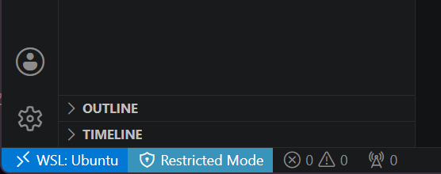

4 Quartoスライド作成環境を作る
4.1 目的
この章は番外編です。この資料もスライドも、すべてQuartoで作られています。
QuartoはPandocベースのオープンソース科学・技術出版システムで、原稿をMarkdown（.qmd）記法で記載し、それをコンパイルすることで文書ファイルを作成します。
1つの文書の中で文書とコードと実行結果とが同居できる点が最大の魅力ですが、スライド作成がPowerPointなしで済ませられる点も強力です。Gitによる版管理、厳密な位置合わせ、自動化が達成できるからです。また、Agentic AIとの相性もよく、草稿や目次案の生成もできます。
この章では、WSLが入ったWindows 11環境を念頭において、Visual Studio CodeでQuartoによるスライド作成を実現するための方法を紹介します。
私自身は自作のDocker Composeファイルを使い、RStudio Serverで執筆しています。データ分析がメインであれば、非常に有用です。
4.2 必要な準備
以下の2点を前提とします。
- WSL（Windows Subsystem for Linux）が使えるようになっていること。
- Visual Studio Codeが使え、
codeコマンドで起動できること。
以下は、WSL上で実行します。
4.2.1 Quartoのインストール
日本語フォントをインストールします。GoogleとAdobeとで共同開発されたNotoがあれば、最低限にはなります。
sudo apt update;sudo apt install -y fonts-noto-cjkQuartoは.debファイルで提供されています。執筆時点では1.10.18-linux-amd64.debが最新版ですが、必要に応じて新しいものをダウンロード、インストールしてください。
cd /tmpcurl -LO https://github.com/quarto-dev/quarto-cli/releases/download/v1.10.18/quarto-1.10.18-linux-amd64.debsudo apt install -y ./quarto-1.10.18-linux-amd64.debインストールの状況を確認するために、quarto checkコマンドを実行します。
quarto check$ quarto check
Quarto 1.10.18
[✓] Checking environment information...
Quarto cache location: /home/swat/.cache/quarto
[✓] Checking versions of quarto binary dependencies...
Pandoc version 3.10.0: OK
Dart Sass version 1.101.0: OK
Deno version 2.7.14: OK
Typst version 0.15.1: OK
[✓] Checking versions of quarto dependencies......OK
[✓] Checking Quarto installation......OK
Version: 1.10.18
Path: /opt/quarto/bin
[✓] Checking tools....................OK
TinyTeX: (not installed)
Chrome Headless Shell: (not installed)
VeraPDF: (not installed)
[✓] Checking LaTeX....................OK
Tex: (not detected)
[✓] Checking Chrome Headless....................OK
Chrome: (not detected)
[✓] Checking basic markdown render....OK
[✓] Checking R installation...........(None)
Unable to locate an installed version of R.
Install R from https://cloud.r-project.org/
[✓] Checking Python 3 installation....OK
Version: 3.12.3
Path: /usr/bin/python3
Jupyter: (None)
Jupyter is not available in this Python installation.
Install with python3 -m pip install jupyter
[✓] Checking Julia installation...上のように、Quartoから利用可能な環境の存在がチェックされます。
インタラクティブなプログラミング環境が必要であれば、Jupyterを入れてください。少なくとも以下の3つがあれば、quarto checkは成功します。
sudo apt install -y python3-ipykernel python3-nbformat python3-nbclient4.2.2 VS Code機能拡張のインストール
最低限必要な機能拡張は、次の2つです。CLIでインストールするには、PowerShellで次のようにします。（本当はWSLでもかまいません。）
code --install-extension ms-vscode-remote.remote-wslcode --install-extension quarto.quarto次のようにして、インストール状況を確認できます。
code --list-extensions | Select-String 'remote-wsl|quarto'> code --list-extensions | Select-String 'remote-wsl|quarto'
ms-vscode-remote.remote-wsl
quarto.quarto4.3 最初のスライド
4.3.1 スライド作成
では、Quartoでスライドを作ってみましょう。WSLにて、作業用ディレクトリを作り、そこに移動します。
mkdir -p ~/quarto-firstcd ~/quarto-firstそして、そのディレクトリでVSCodeを実行します。
code .すると、Windows側にてVSCodeのウインドウが表示されます。
ウインドウの左側で、2点確認すべき点があります。
第1に、左下の青い部分が「WSL: Ubuntu」となっている必要があります。さもなくば、WSL Remote機能拡張が正しく認識されていません。
第2に、左下の水色の部分が「Restricted Mode」になっていて、そのディレクトリが信頼されていない状態にあるのを、修正する必要があります。それには、「Restricted Mode」のアイコンをクリックし、「Trust」ボタンを押してください。水色の部分が消えれば成功です。

最初に作るスライドは、slide.qmdという名前にします。WSLのターミナルで、以下のコマンドを実行します。
code slide.qmdすると、VSCodeのウインドウ内に、slide.qmdのタブが表示されます。そこに、以下のテキストを貼り付けます。
---
title: Quarto + Reveal.js入門
author: テスト太郎
format:
revealjs:
theme: simple
slide-number: true
embed-resources: true
transition: fade
---
## Quartoとは
Markdownから、HTML、PDF、Word、Webサイト、スライドを生成できるツールです。
## なぜプレゼンに使うのか
- テキストで管理できる
- Gitで差分が見える
- 再利用しやすい
- 図表やコードを埋め込みやすい
## Quartoのしくみ
これは「Markdownを入力にして、HTMLを出力するビルドツール」です。
```{.bash}
quarto render slides.qmd
```
## おしまい
ありがとうございました。